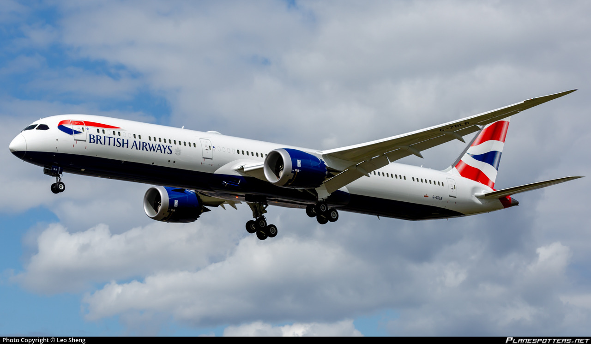
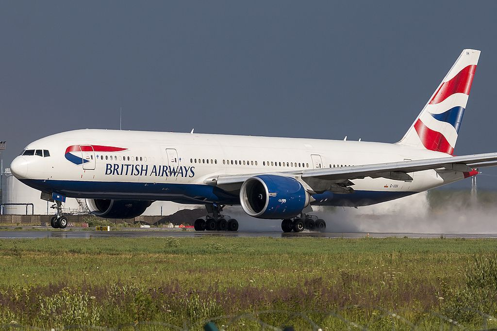
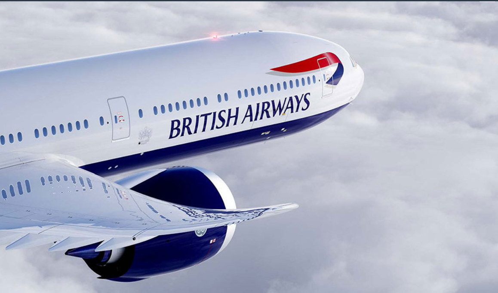

Sectiunea Avioane
O sectiune calitativa
Timp de aproape jumătate de secol, Boeing 747 a fost o parte crucială a flotei British Airways. Cu toate acestea, pe măsură ce timpurile s-au schimbat și sunt favorizate aeronavele mai eficiente, se pare că este sfârșitul Reginei Cerului.
Având în vedere acest lucru, ce aeronave va folosi transportorul pentru următoarea eră de călătorie?
Actuala criză COVID-19 a accelerat retragerea multor aeronave. Flota British Airways Boeing 747 urma să fie deja retrasă în următorii ani.
Cu toate acestea, moartea "Reginei cerului" a fost, din păcate, avansată din cauza pandemiei actuale provocând un număr mult mai mic de pasageri.
Pe termen scurt, British Airways va trebui să utilizeze aeronava pe care trebuie să o înlocuiască deja pe 747. Având în vedere termenul asociat cu achiziționarea de aeronave noi, va trece ceva timp până când livrarea aeronavelor de înlocuire se va finaliza.
Aceasta înseamnă că deocamdată, compania aeriană va avea o flotă mai mica, dar nu e o problema pentru British Airways la nivel intermediar.
British Airways are in flota mai multe tipuri de aeronave, iar cele de distanta lunga sunt:
- 777-200ER, 43 de aeronave;
- 777-300ER, 12 aeronave si 4 avioane in productie;
- Airbus A350-1000, 6 aeronave si 12 in productie. Comanda prevede o optiune de inca 18 aeronave;
- Boeing 787-8 Dreamliner, 12 aeronave;
- Boeing 787-9 Dreamliner, 18 aeronave;
- Boeing 787-10 Dreamliner, 2 aeronave cu inca 10 in productie.
Acestea sunt aeronavele care vor inlocui deocamdată 747-le. Conform e-mailurilor de schimbare a rezervărilor primite de clienții British Airways, se pare că 777 este preferatul pentru rutele Boeing 747 în acest moment.
Retragerea 747 nu este o mișcare surpriză pentru British Airways. Într-adevăr, înainte de pandemie, planurile erau deja în vigoare pentru a rezolva deficitul de flotă cauzat de pensionarea lor. La începutul anului trecut, BA a plasat o comandă de până la 42 de aeronave Boeing 777X noi. Aceasta cuprinde 18 comenzi ferme și 24 de opțiuni.
În acel moment, CEO-ul IAG, Willie Walsh, a comentat:
"Noul 777-9X este cea mai eficienta din punct de vedere al combustibilului aeronava de cursa lunga din lume si va aduce multe beneficii flotei British Airways. Este inlocuirea ideala pentru 747 si marimea si capacitatea sa vor fi ideale pentru reteaua existenta de avioane
La prezentarea rezultatelor Q3 din raportul IAG-ului (International Airlines Group) de anul trecut, am aflat câteva detalii suplimentare despre ce să ne așteptăm de la livrarea 777X. British Airways va lua opt din cele 18 comenzi ferme ale sale în 2022.
Cu toate acestea, Boeing va intarzia programul de livrare 777X cu un an mai tarziu decat a fost planificat anterior
Probabil ca nu e nimeni care sa nu fi auzit de "sigurul" avion 737 MAX fabricat de producatorul american Boeing. Dar, totusi, sa facem o mic rezumat despre acest avion, inainte sa incepem articolul.
Boeing 737 MAX este a patra generație de Boeing 737 , un avion de linie îngust corp fabricat de Boeing Commercial Airplanes (BCA). Succesează Boeing 737 Next Generation (NG). Noutatile pe care acest model le aduce sunt motoare mai puternice, LEAP-1, modificari aerodinamice inclusive distinctivele aripioare.
În urma a două accidente fatale, Lion Air Flight 610 și Ethiopian Airlines Flight 302 , 737 MAX a fost interzis de la zbor la nivel mondial în martie 2019. Boeing a implementat modificări ale sistemului său de control al zborului și de formare a pilotului. Boeing a suspendat ulterior producția în ianuarie 2020 cu aproximativ 400 de avioane MAX în așteptarea livrării; producția a reluat în mai 2020 într-un ritm scăzut. Între 29 iunie și 1 iulie 2020, FAA și Boeing au efectuat o serie de zboruri de testare inaintea recertificarii pentru zbor. Mai multe sarcini cheie rămân înainte de a putea ridica comanda de împământare.
A fost anunțat în aprilie 2016 că 737 MAX-7 va fi întins cu două rânduri de scaune cu aproximativ doi ani înainte de construirea primului. Acest lucru se datorează faptului că vânzările modelului 737 MAX-7 au fost foarte lente, câștigând doar 60 de comenzi. Boeing avea în vedere anularea seriei. În schimb, au reproiectat-o într-o linie similară cu modul în care 737-900ER a fost reproiectat pentru a stimula eșecul 737-900. Singura diferență este că aceasta a fost făcută înainte de lansarea produsului.
Problema care stă la baza versiunilor scurte de linii aeriene este aceea că acestea au proporțional mai multă greutate pe scaun decât versiunile mai lungi, adică mai mult combustibil cu potențial redus. Dacă ne uitam înapoi la toate generațiile 737, cele mai scurte modele au avut cel mai puțin succes:
737-100: 30 vândute din 1144 model original; 2,6%
737-500: 389 vândute din clasici din 1988; 19,6%
737-600: 69 vândute din aproximativ 7100 NG; 1,0%
737-MAX7. 63 vândute din aprox. 3600 MAX; 1,7%
Capacitatea de ședere 737 MAX-7 este acum 153 în configurații de două clase sau 172 în configurație de înaltă densitate, cu o întindere de fuselaj de 1, 93 m.
Mai jos avem starea primelor 7 avioane MAX 7, insotite fiecare de cate o fotografie si niste detalii.
Informatii: Primul zbor: 16 Mar 2018
Numarul de serie al producatorului: 42561
Informatii: Primul zbor: 21 Apr 2018
Numarul de serie al producatorului: 42569
informatii: Primul zbor: 21 Dec 2019, avionul e depozitat, asteptand livrarea.

Informatii: Codul de teste: N1786B, avionul e depozitat, asteptand livrarea.
Numar de serie al producatorului: 42587
Informatii: Codul de teste: N1786B, avionul e depozitat, asteptand livrarea.
Numar de serie al producatorului: 42588
Informatii: Primul zbor: 22 Sep 2019, avionul e depozitat, asteptand livrarea.
Numar de serie al producatorului: 42589
Informatii: Primul zbor: 10 Oct 2019, avionul e depozitat, asteptand livrarea.
Numar de serie al producatorului: 42590

În iulie 2020, un număr de 61 de aeronave Boeing 747 , sau puțin sub 4% din numărul total de 747 construite, au fost implicate în accidente și incidente care au dus la o pierdere totala , ceea ce înseamnă că aeronava fie a fost distrusa, fie a fost deteriorata, companiile aeriene ne mai reparand aeroava. Dar care au fost primele 10 avioane Boeing 747 anulate? Sa aflam.

Despre accident: Acest avion al Pan Am a fost implicat in dezastrul de la Tenerife, in care 583 de oameni au murit dupa ce cursa Pan Am 1736 si cursa KLM 4805 s-au ciocnit pe pista din cauza pilotului KLM. Mai jos un videoclip cu ciocnirea avioanelor resimulata de MyFlightChannel:
Numarul de inregistrare al avionului: N736PA fiind numit si "Clipper Victor"

Despre accident: Zborul Pan Am 073 a ateriza pe pista 25R a Aeroportului Internațional Karachi (KHI), Pakistan. Viteza de apropiere chiar înainte de aterizare a fost de 152 noduri. După aterizare, tracțiunea inversă a fost aplicată pe motoarele nr.1, 2 și 3. Motorul nr.4 care avea un inversor neutilizabil a fost lăsat la ralanti. Din cauza esecului pilotilor de a monitoriza motoarele, atunci cand au oprit reversoarele, motorul 4 a accelerat avionul virand spre stanga si iesind de pe pista.
Numarul de inregistrare: N738PA fiind numit si "Clipper Defender"
Mai jos cateva fotografii cu avionul de la locul impactului:


Despre accident: In 1988 Zborul Pan Am 103 a fost un zbor transatlantic Pan Am programat regulat de la Frankfurt la Detroit prin Londra și New York . La 21 decembrie 1988, N739PA, aeronava care a operat piciorul transatlantic al traseului a fost distrusă de o bombă, ucigând toți cei 243 de pasageri și 16 membrii ai echipajului ceea ce a devenit cunoscut sub numele de Lockerbie Disaster. Secțiuni mari ale aeronavei s-au prăbușit pe o stradă rezidențială din Lockerbie , Scoția , ucigând 11 oameni pe sol. Cu un număr de 270 de oameni uciși, acesta fiind cel mai mortal atac terorist din istoria Regatului Unit .
Numarul de inregistrare: N739PA fiind numit si "Clipper Maid of the Seas"

Despre accident:În timp ce aeronava decola de pe pista 24 de pe Aeroportul Internațional Jomo Kenyatta din Nairobi, piloții au simțit o vibrație. Căpitanul a continuat urcarea și a retras angrenajul de aterizare. Cu toate acestea, pe măsură ce se făcea acest lucru, aeronava a început să coboare și se aprindea lumina sistemului de avertizare a angajarii (aeronava avea o viteza prea mica) . Aeronava a continuat să coboare și la aproximativ 1.700 m de la capătul pistei, avionul 747 s-a prăbușit în iarbă. A lovit apoi un drum de acces ridicat și s-a rupt in bucati. Aripa stângă a explodat și focul s-a extins către fuzelaj. 55 din cei 140 de pasageri și 4 dintre cei 17 membri ai echipajului au fost uciși.
Numarul de inregistrare: D-ABYB

Despre accident: Aeronava, care transporta 153 de pasageri și 17 membri ai echipajului, a fost deturnată de doi bărbați imediat după ieșirea din Amsterdam. Zborul a deviat spre Beirut, unde alți 7 au urcat în avion. Aeronava a fost apoi dusa către Cairo. Toți ocupanții au evacuat aeronava imediat după aterizare. Doar dupa câteva minute, aeronava a fost aruncată în aer. Acest incident a marcat primul 747 distrus.
Numarul de inregistrare: N752PA

Informatii: Prăbușit la 9 mai 1976 la Madrid Barajas, în timp ce a fost lovit de fulger
Numarul de inregistrare: TWA: N53111 iar Fortele aeriene din Iran: 5-283

Despre accident: In timpul luptei pentru aeroport (distrus în mod deliberat prin retragerea forțelor irakiene sau neintenționat în timpul bombardamentelor aliate) aeronava a fost capturata de forțele irakiene, fiind distrusa odata cu aeroportul.
Numar de inregistrare: G-AWND

Despre accident: Trans World Airlines Flight 800 (TWA 800) a fost un Boeing 747-100 care a explodat și s-a prăbușit în Oceanul Atlantic, lângă East Moriches, New York , pe 17 iulie 1996, în jurul orei 8:31, la 12 minute după decolare de la Aeroportul Internațional F. Kennedy pe un zbor planificat internațional de pasageri către Roma , cu escala în Paris . Toate cele 230 de persoane de la bord au murit în accident; este cel de-al treilea accident aviatic cu cei mai multi morti din istoria SUA.
Numar de inregistrare: N93119

Despre accident: Pe 20 decembrie 1995, zborul Tower Air 41 din New York Kennedy către Miami s-a abătut de pe pistă în timpul decolării pe o furtună de zăpadă, rezultând că un însoțitor de zbor a primit răni grave și 24 de pasageri au primit răni minore. Aeronava a suferit daune grele și a trebuit să fie anulată.
Numar de inregistrare: N605FF

Despre accident: Echipajul a finalizat o rotire de 180 de grade pe pista 27 pentru a se pregăti pentru decolare atunci când a sunat alarma de incendiu în panoul cabinei. Echipajul a oprit aeronava și a ordonat tuturor celor 402 de ocupanți să evacueze aeronava. Focul s-a răspândit rapid pe partea dreaptă a avionului care a fost distrus. Toți 402 de ocupanți au scăpat, 10 dintre ei au fost răniți ușor.
Numar de inregistrare: N28888